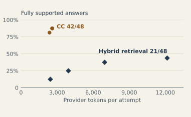

Context Compiler (CC)
Make analytical knowledge reusable.
Context Compiler (CC) is an incremental semantic compiler for AI reasoning. The Python library applies definitions your team has checked to select the evidence for one question. You can add a definition for the next task and keep the ones already in use. Given the same sources, rules and task, the compiler produces the same context.
Every research question draws on more than documents. It depends on definitions, relationships, source authority and analytical judgments established through earlier work. Conventional AI workflows often reconstruct that context each time.
Context Compiler makes that knowledge reusable. It turns evidence and validated analytical meaning into compact, governed context that AI models can reason over. As research expands, the underlying semantic knowledge grows with it. A team can extend what it has learned without first building a comprehensive knowledge graph.
In our bank research benchmark, the result was more reliable, evidence-supported reasoning with less repeated model work.
How it works
- SourcesSupply the filings, reporting periods and source versions available on the research date.
- Domain packKeep reviewed definitions, required inputs and rules for which disclosure takes precedence. A model can propose a new mapping. It needs review before it joins the pack.
- CompilationThe compiler applies those rules, checks required inputs and selects evidence for the task. Each selected figure retains a reference to its source.
- ModelRender the compilation for the answering model. Its answer can cite the evidence behind each figure.

Python interface
import context_compiler as cc
pack = cc.load_pack(pack_path)
snapshot = cc.snapshot(sources, inventory)
evidence = cc.derive(snapshot, read_bytes, pack)
compilation, run_record = cc.compile(snapshot, evidence, task, pack)
rendering = cc.render(
compilation,
target="json_messages.v1",
release_scope=["public"],
)The application supplies a pack directory, a list of sources and their versions, a function to read them, and a task specifying the question. The snapshot fixes the input versions. The run record describes the compilation. The last call formats the evidence as model messages and limits release to material marked public.
What accumulates
A bank may report net interest income on two bases. The reported figure includes tax-exempt income as earned. The taxable-equivalent figure adjusts that income to show what a taxable investment would need to earn. An analyst can validate which rows use each basis and which filing governs a comparison. When the next quarter arrives, the compiler can apply that distinction to the new figures.
The firm keeps its definitions, the links from filing rows to those definitions, the rules for deciding which filing governs, and the source references behind each figure. In the bank study, KeyCorp reused definitions and accounting checks developed for Regions and needed 20 new declarations of its own. A fresh compilation can use that work with a different answering model.
Explore a bank filing replayReusing financial definitions when filings change
Huntington changed the wording of five rows between its earnings supplement and its 10-Q. By matching figures across two quarters, CC found the correct existing definition for all five without asking a model to interpret each label again.
For established definitions, the replay projected 23% fewer model calls to onboard the bank (22 to 17) and 60% fewer for its next filing (10 to 4 initially). CC reproduced all 11 historical compilations.
Measured Reasoning Yield
In an exploratory study of two banks, we developed the definitions with the filings in view. A fully supported answer had to give the correct figures and claims and cite the disclosures that established them. Across 44 recurring requests, CC produced 42 fully supported answers versus 24 for hybrid retrieval under scoring rules fixed before the run, with 73% lower inference expense. Independent review raised the retrieval count to 26/44.
Reasoning Yield counts correct, fully supported answers per million model tokens. Under those scoring rules, CC delivered 384.7 versus 45.7 for retrieval, or 8.4 times the yield. Inference expense excludes the cost of preparing and maintaining the pack.

Research program
We tested whole filings, search results, graphs of linked evidence and combinations of graphs and compiled context. Other tests changed which source governed a figure, withheld required evidence or replayed a question using only the filings available at the time.
The results depended on how the research was done. On Huntington, a bank held back from development, a model reading selected filing sections answered four of six questions with full support. CC answered one. Agents that could search filings and keep versioned notes also matched or exceeded CC on some tasks.
Technical inquiry
Bring a recurring research question and the sources behind it. We can walk through the evidence, the definitions it needs and what carries forward to the next filing.
Request a technical evaluation